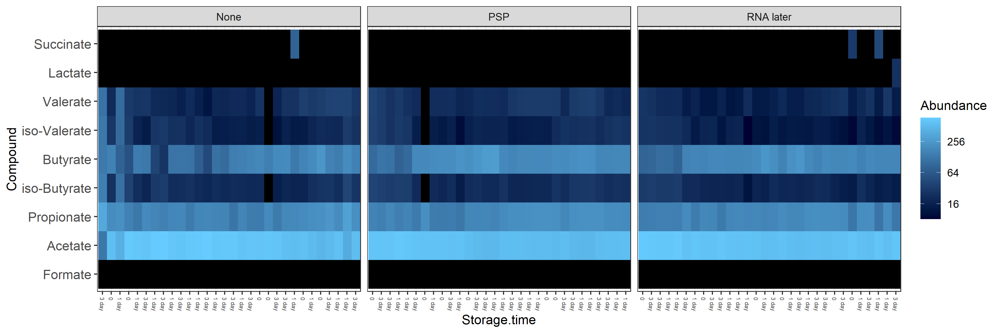
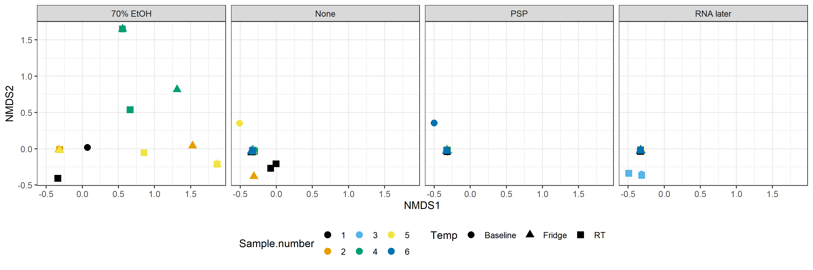
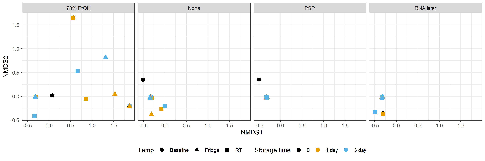

Chapter 5 Figure 5
##libraries
library("ggplot2")
library("phyloseq")
library("tidyverse")
library("dplyr")
library("vegan")
library("reshape2")
library("ggplot2")
library("ggh4x")5.1 Preprocess data
#Read in data
df <- read.csv(file = "./data/Pilot SCFA data - MG.csv",
check.names = FALSE,
row.names = 1)
#Sample names
sample_names <- colnames(df)
#compounds
compound_names <- row.names(df[6:14,])
#First create OTU matrix
otu_df <- df[6:14,]
num_otu_df <- data.frame(apply(otu_df, 2, function(x) as.numeric(as.character(x))))
otu_mat <- data.matrix(num_otu_df)
rownames(otu_mat) <- paste0("OTU", 1:nrow(otu_mat))
colnames(otu_mat) <- paste0("Sample", 1:ncol(otu_mat))
#Tax matrix
tax_mat <- otu_mat[,1:2]
tax_mat[,1] <- compound_names
tax_mat[,2] <- compound_names
colnames(tax_mat) <- c("Compund","X")
#Sample_data_frame
metadf <- data.frame(lapply(df[1:5,], as.character), stringsAsFactors=FALSE)
row.names(metadf) <- row.names(df[1:5,])
metadf["Sample_name",] <- colnames(df)
colnames(metadf) <- colnames(otu_mat)
t_metadf <- data.frame(t(metadf), stringsAsFactors=FALSE)
t_metadf[t_metadf$Storage.time == 0,"Temp"] <- "Baseline"
t_metadf[,"Buffer.type.Temp"] <- paste(t_metadf[,"Buffer.type"],t_metadf[,"Temp"],sep="|")
#Temp and time column
t_metadf[,"Temp.Storage.time"] <-
paste(t_metadf[,"Temp"],t_metadf[,"Storage.time"],sep="|")
#Change Baseline|0 to Baseline
t_metadf[,"Temp.Storage.time"] <-
gsub(pattern = "Baseline\\|0", replacement = "Baseline",
x = t_metadf[,"Temp.Storage.time"])
#Order of temp
t_metadf[,"Temp"] <-
factor(t_metadf[,"Temp"], levels = c("Baseline", "RT", "Fridge"))
#Sample column
t_metadf$`Sample name` <- t_metadf$Sample_name
#Create phyloseq object
OTU <- otu_table(otu_mat, taxa_are_rows = TRUE)
tax_mat <- as.matrix(tax_mat[,1])
colnames(tax_mat) <- "Compound"
TAX <- tax_table(tax_mat)
sampledata <- sample_data(data.frame(t_metadf, stringsAsFactors=FALSE))
physeq <- phyloseq(OTU,TAX,sampledata)
#remove samples with no otu numbers
physeq = subset_samples(physeq, Sample_name != "6Q")
physeq = subset_samples(physeq, Sample_name != "6R")
physeq = subset_samples(physeq, Sample_name != "6S")
physeq = subset_samples(physeq, Sample_name != "6T")
physeq = subset_samples(physeq, Sample_name != "6P")
#save physeq object
save(physeq, file = "./data/lipid_physeq_object")
#Set to even sampling depth
#Set to even sampling depth (1000)
physeq_1k = transform_sample_counts(physeq,
function(x) 1000 * x/sum(x))
#save physeq object
save(physeq_1k, file = "./data/lipid_physeq_1k_object")5.2 Colour blindy friendly palette
cbbPalette <- c("#000000", "#E69F00", "#56B4E9", "#009E73", "#F0E442", "#0072B2", "#D55E00", "#CC79A7")
theme_set(theme_bw())
scale_colour_discrete <- function(palname=cbbPalette){
scale_colour_manual(values = palname)
}
scale_fill_discrete <- function(palname=cbbPalette){
scale_fill_manual(values=palname)
}5.3 A Heatmap
# #Remove etoh samples
# physeq_no_etoh <- subset_samples(physeq, Buffer.type != "70% EtOH")
# sample_data(physeq_no_etoh)
#
# #Set to even sampling depth (1000)
# physeq_no_etoh_1k <-
# transform_sample_counts(
# physeq_no_etoh, function(x) 1000 * x/sum(x))
#Choose order for temp
#sample_data(physeq_1k)[,"Temp"] <- factor(sample_data(physeq_1k)[,"Temp"], levels = c("Baseline", "RT", "Fridge"))
#Heatmap
heatmap_facet <-
plot_heatmap(physeq_1k,
sample.label = "Sample_name",
taxa.label = "Compound") +
facet_nested( ~ Buffer.type + Storage.time + Temp , scales = "free_x" ) +
theme(panel.spacing.x=unit(0, "lines")) +
theme(axis.text.x = element_text(size=6))
ggsave(plot = heatmap_facet,
filename = "figures/lipid_heatmap.png",
device = "png", dpi = 300,
units = "mm", width = 300, height = 100)
5.4 B and C Beta diversity
#NMDs bray curtis
physeq_1k_ord_nmds_bray <- ordinate(physeq_1k, "NMDS", "bray")#NMDS_bray facetted by Buffer.type.Temp, shape by sample
NMDS_bray_facet <-
plot_ordination(physeq_1k, physeq_1k_ord_nmds_bray,
color = "Sample.number", shape = "Temp") +
geom_point(size=3) +
facet_wrap( ~ Buffer.type, nrow = 1) +
theme(legend.position="bottom")
ggsave(NMDS_bray_facet,
filename = "./figures/Lipids_NMDs_bray_curtis_facet_colour_by_sample.png",
device = "png", dpi = 300,
units = "mm", width = 300, height = 100)
#NMDS_bray facetted by Buffer.type.Temp
NMDS_bray_facet <-
plot_ordination(physeq_1k,
physeq_1k_ord_nmds_bray,
color = "Storage.time", shape = "Temp") +
geom_point(size=3) +
facet_wrap( ~ Buffer.type, nrow = 1) +
theme(legend.position="bottom")
ggsave(NMDS_bray_facet,
filename = "./figures/lipids_NMDs_bray_curtis_facet.png",
device = "png", dpi = 300,
units = "mm", width = 300, height = 100)